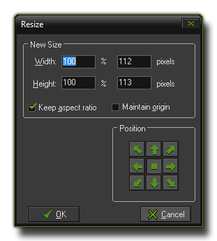

The Sprite Editor Transform Menu
The transform menu contains a number of commands
related to changing the general size and shape of the
sub-images.
From the transform
menu you can perform any of the following general transformations
on the sub-images of your sprite:
- Shift: This option opens a window where you can choose
to shift the current sub-image (or all of them) by a certain
amount. The image can be made to wrap horizontally or vertically so
that it either disappears out the side of the screen or "wraps" so
that any pixels that go out one side will be shifted to the
opposite side.

- Mirror/Flip: With this you can mirror the selected image
(or all sub-images) horizontally and /or flip them vertically too:

- Rotate: This gives you the option to rotate the image.
There are buttons supplied for the most common amounts (90°, 180°
and 270°) as well as a slider and an input box so you can specify
any angle from 0-360°. Please note that the sub-image size does
not scale to take into consideration areas of the image that
may be outside the window when you finish, so you may wish to
resize the canvas (see below) before using this option.

- Scale: Using this command will open the scale window
where you can change the scale of the sub-image (or images). Like
"rotate", above, any pixels that are scaled outside of the bounds
of the sub-image will not resize the sub-image, but rather
be "cut off" and the image trimmed to size. To get around this, you
can resize the canvas (see below).
- Skew: This command skews the image(s) horizontally
and/or vertically by a given amount, which can be input directly or
changed by the sliders. As with many of these functions, the canvas
size is not changed to accommodate any part of the image
that may be lost outside of the window. To get around this you can
use the "Resize Canvas" command (see below).

- Resize Canvas: With this command you can resize the
canvas of the sprite (this will affect all sub-images!). You
can specify a new width and height in either pixels or as a
percentage of the current size, and you can instruct GameMaker:
Studio to maintain the aspect ratio of the canvas (so, changing
the height will change the width in proportion and vice-versa) as
well as maintain the position of the origin. The box on the right
at the bottom labelled "Position" permits you to choose the
"anchor" for the resizing (default is the center). 
- Stretch: Here you can stretch the sprite to a new size.
This will affect all sub-images and resize the sprite to the
match the size you input, stretching it or shrinking it to match.
As with "Resize Canvas", You can specify a new width and height in
either pixels or as a percentage of the current size, and you can
instruct GameMaker: Studio to maintain the aspect ratio of
the canvas (so, changing the height will change the width in
proportion and vice-versa) as well as maintain the position of the
origin. You also have the option to set the quality of the scaling,
which basically sets the interpolation level.
- Crop: This is an automatic tool that aims to make the
sub-images as small as possible. This is very useful because the
larger the images, the more video memory GameMaker: Studio
will use, which for mobile devices is not what you want. There is
only one option you can set in the pop up window for this and that
is the "border", which sets a transparent border around the images.
If you provide a negative value to this , the outside of the images
will be cut off by the amount that you specify.
© Copyright YoYo Games Ltd. 2018 All Rights Reserved